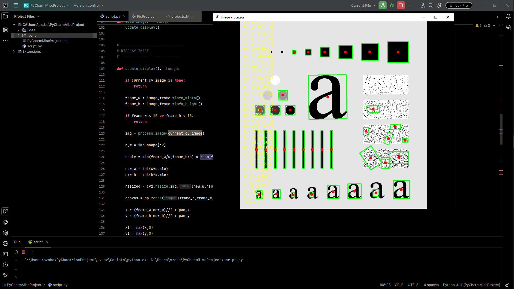
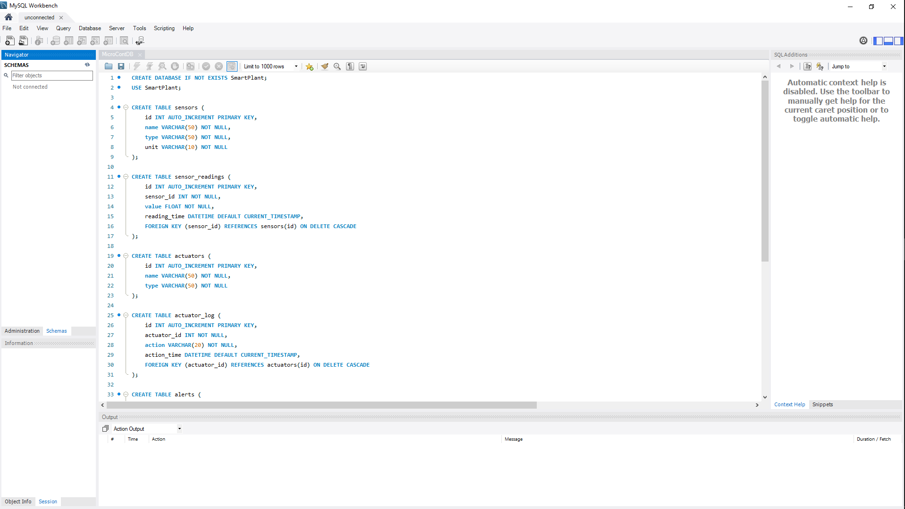
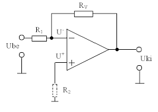
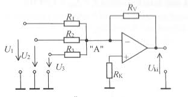

Mikrovezérlők
Okos öntözőrendszer – IoT projekt
1. A projekt áttekintése
A projekt egy mikrovezérlő, talajnedvesség-érzékelő és vízszivattyú segítségével valósít meg egy WiFi-alapú okos öntözőrendszert.
- Valós időben méri a talaj nedvességét
- Adatokat küld Node-RED felé hálózaton keresztül
- Műszerfalon jeleníti meg az adatokat
- Lehetővé teszi a szivattyú távoli vezérlését
2. Cél
- A növénygondozás automatizálása
- Távoli elérés és vezérlés biztosítása
- IoT kommunikáció (MQTT) bemutatása
3. Rendszerarchitektúra
[Talajérzékelő] → [ESP mikrokontroller] → (WiFi)
↓
[MQTT broker]
↓
[Node-RED UI]
↑
(Felhasználó)Miért MQTT?
- Alacsony erőforrás-igényű
- Publish/Subscribe modell
- Natív támogatás Node-RED-ben
4. Hardverkomponensek
- Arduino Leonardo + WiFi modul
- Talajnedvesség-érzékelő (analóg)
- Tranzisztor és ellenállás
- Vízszivattyú
- Tápegység
5. Szoftverkomponensek
- Arduino IDE
- Node-RED
- Mosquitto (MQTT broker)
6. A program működése
6.1 WiFi kapcsolat
while (WiFi.begin(ssid, password) != WL_CONNECTED) {
delay(5000);
}A program folyamatosan próbál csatlakozni a megadott WiFi hálózathoz, amíg a kapcsolat létre nem jön.
6.2 MQTT beállítás
client.setServer(mqtt_server, 1883);
client.setCallback(callback);A MQTT broker címe és portja kerül beállításra, valamint a beérkező üzenetek kezelésére szolgáló callback függvény.
6.3 Parancsok fogadása és módváltás
if (msg == "ON") {
autoMode = false;
digitalWrite(pumpPin, HIGH);
}
else if (msg == "OFF") {
autoMode = false;
digitalWrite(pumpPin, LOW);
}
else if (msg == "AUTO") {
autoMode = true;
}A rendszer MQTT-n keresztül fogad parancsokat. "ON" és "OFF" esetén manuális módba vált, míg "AUTO" esetén visszatér automatikus öntözésre.
6.4 MQTT újracsatlakozás
while (!client.connected()) {
if (client.connect("LeonardoClient")) {
client.subscribe("plant/pump");
} else {
delay(3000);
}
}Ha a kapcsolat megszakad a brokerrel, a program újracsatlakozik és újra feliratkozik a vezérlő topikra.
6.5 Szenzor olvasás
int moisture = analogRead(sensorPin);A talajnedvesség-érzékelő analóg értékének beolvasása.
6.6 Automatikus öntözés logika
if (autoMode) {
if (moisture > dryThreshold && !pumpState) {
digitalWrite(pumpPin, HIGH);
}
else if (moisture < wetThreshold && pumpState) {
digitalWrite(pumpPin, LOW);
}
}Automatikus módban a rendszer a nedvesség alapján vezérli a pumpát. Két küszöbérték biztosítja, hogy a pumpa ne kapcsoljon ki-be túl gyakran (hiszterézis).
6.7 Adatok küldése
client.publish("plant/moisture", String(moisture).c_str());
client.publish("plant/status", pumpState ? "ON" : "OFF");
client.publish("plant/mode", autoMode ? "AUTO" : "MANUAL");A rendszer rendszeresen elküldi a szenzor értékét, a pumpa állapotát és az aktuális működési módot MQTT-n keresztül.
6.8 Fő ciklus és időzítés
client.loop();
if (millis() - lastPublish > publishInterval) {
lastPublish = millis();
}A client.loop() biztosítja a folyamatos MQTT kommunikációt. Az adatok küldése időzítve történik a millis() függvény segítségével, így elkerülhető a blokkoló delay() használata.
7. Node-RED műszerfal
Komponensek
- Mérő (Gauge) – nedvesség megjelenítése
- Szöveg – szivattyú állapot
- Gomb – ON/OFF vezérlés
MQTT témák
| Téma | Irány | Funkció |
|---|---|---|
| plant/moisture | ESP → Node-RED | Érzékelő adatok |
| plant/status | ESP → Node-RED | Szivattyú állapot |
| plant/pump | Node-RED → ESP | Vezérlés |

Programozás
Image Processor – Program Dokumentáció
Ez a Python alapú alkalmazás egy interaktív képfeldolgozó eszköz,
amely Tkinter GUI-t és OpenCV-t használ. A program képeket tölt be,
kontúrokat detektál, minimum befoglaló téglalapokat rajzol, és megjeleníti az objektumok középpontjait.
Fő funkciók
- Kép betöltése fájlrendszerből
- Éldetektálás (Canny)
- Kontúrkeresés és szűrés
- Minimum befoglaló téglalap rajzolása
- Középpontok meghatározása és listázása
- Zoom (egérgörgő)
- Kép mozgatása (drag/pan)
Képfeldolgozás folyamata
- Kép másolása annotációhoz
- Szürkeárnyalatossá alakítás
- Gaussian blur alkalmazása zajcsökkentéshez
- Canny éldetektálás
- Kontúrok kinyerése
- Kis kontúrok kiszűrése (area < 100)
- Minimum befoglaló téglalap számítása
- Középpontok meghatározása
- Középpontok kirajzolása és listázása
Fontos függvények
process_image(image)
Feldolgozza a bemeneti képet:
- Élek detektálása
- Kontúrok keresése
- Téglalapok rajzolása
- Középpontok kiszámítása
draw_center_list(img, centers)
A kép alján listázza az összes detektált objektum középpontját.
update_display()
Frissíti a megjelenítést:
- Kép méretezése a kerethez
- Zoom alkalmazása
- Pan eltolás kezelése
- Canvas-be illesztés
zoom(event)
Egérgörgővel vezérelt nagyítás/kicsinyítés.
drag(event)
Egérrel történő képmozgatás (pan).
Felhasználói interakciók
- Load Image gomb: kép betöltése
- Egérgörgő: zoom
- Bal egérgomb + húzás: kép mozgatása
- Ablak átméretezés: automatikus újrarajzolás
Használt technológiák
- Python
- Tkinter (GUI)
- OpenCV (képfeldolgozás)
- NumPy (mátrixműveletek)
- Pillow (kép megjelenítés Tkinterben)
Globális változók
current_cv_image – aktuális betöltött képzoom_factor – nagyítás mértékepan_x, pan_y – eltolás koordinátákdrag_start_x, drag_start_y – drag kezdőpont
Megjegyzések
A program valós idejű feldolgozást végez minden megjelenítés frissítésnél,
így nagy képek esetén a teljesítmény csökkenhet.
Működő project:

Image Processor – Program Dokumentáció
Ez a Python alapú alkalmazás egy interaktív képfeldolgozó eszköz, amely Tkinter GUI-t és OpenCV-t használ. A program képeket tölt be, kontúrokat detektál, minimum befoglaló téglalapokat rajzol, és megjeleníti az objektumok középpontjait.
Fő funkciók
- Kép betöltése fájlrendszerből
- Éldetektálás (Canny)
- Kontúrkeresés és szűrés
- Minimum befoglaló téglalap rajzolása
- Középpontok meghatározása és listázása
- Zoom (egérgörgő)
- Kép mozgatása (drag/pan)
Képfeldolgozás folyamata
- Kép másolása annotációhoz
- Szürkeárnyalatossá alakítás
- Gaussian blur alkalmazása zajcsökkentéshez
- Canny éldetektálás
- Kontúrok kinyerése
- Kis kontúrok kiszűrése (area < 100)
- Minimum befoglaló téglalap számítása
- Középpontok meghatározása
- Középpontok kirajzolása és listázása
Fontos függvények
process_image(image)
Feldolgozza a bemeneti képet:
- Élek detektálása
- Kontúrok keresése
- Téglalapok rajzolása
- Középpontok kiszámítása
draw_center_list(img, centers)
A kép alján listázza az összes detektált objektum középpontját.
update_display()
Frissíti a megjelenítést:
- Kép méretezése a kerethez
- Zoom alkalmazása
- Pan eltolás kezelése
- Canvas-be illesztés
zoom(event)
Egérgörgővel vezérelt nagyítás/kicsinyítés.
drag(event)
Egérrel történő képmozgatás (pan).
Felhasználói interakciók
- Load Image gomb: kép betöltése
- Egérgörgő: zoom
- Bal egérgomb + húzás: kép mozgatása
- Ablak átméretezés: automatikus újrarajzolás
Használt technológiák
- Python
- Tkinter (GUI)
- OpenCV (képfeldolgozás)
- NumPy (mátrixműveletek)
- Pillow (kép megjelenítés Tkinterben)
Globális változók
current_cv_image– aktuális betöltött képzoom_factor– nagyítás mértékepan_x, pan_y– eltolás koordinátákdrag_start_x, drag_start_y– drag kezdőpont
Megjegyzések
A program valós idejű feldolgozást végez minden megjelenítés frissítésnél, így nagy képek esetén a teljesítmény csökkenhet.
Működő project:

Student Grade Manager – Program Dokumentáció
Ez a Python alapú alkalmazás egy egyszerű tanulói jegykezelő rendszer, amely Tkinter grafikus felületet használ. A program lehetővé teszi diákok adatainak rögzítését, jegyek kiszámítását és fájlba mentését.
Fő funkciók
- Diák nevének és pontszámának megadása
- Jegy automatikus kiszámítása
- Adatok mentése fájlba
- Mentett adatok megjelenítése a felületen
- Hibakezelés (validáció és figyelmeztetések)
Jegy kiszámítás logika
- 90–100 pont → 5
- 80–89 pont → 4
- 70–79 pont → 3
- 60–69 pont → 2
- 0–59 pont → 1
Osztályok
Student
Egy diák adatait reprezentálja.
name– diák nevepoints– elért pontszámgrade– kiszámított jegy
Metódusok:
calculate_grade()– jegy meghatározása pontszám alapjánto_string()– formázott szöveges reprezentáció
GradeManager
Fájlkezelésért felelős osztály.
filename– mentési fájl (alapértelmezett: grades.txt)
Metódusok:
save_student(student)– diák adatainak mentése fájlba
GradeApp
A grafikus felhasználói felületet kezeli.
- Input mezők (név, pontszám)
- Mentés gomb
- Szöveges kimeneti mező
Fontos függvények
save_student()
A felhasználói input feldolgozása:
- Üres név ellenőrzése
- Szám típus ellenőrzése
- Pontszám tartomány validálása
- Student objektum létrehozása
- Mentés fájlba
- Megjelenítés a GUI-ban
Felhasználói interakciók
- Név megadása – kötelező mező
- Pontszám megadása – 0 és 100 között
- Save Student gomb – adat mentése
- Hibaüzenetek – érvénytelen input esetén
Használt technológiák
- Python
- Tkinter (GUI)
- Fájlkezelés (szöveges fájl írás)
Adatmentés
Az adatok a grades.txt fájlba kerülnek mentésre,
minden diák külön sorban, formázott szövegként.
Megjegyzések
- A program nem ellenőrzi a duplikált bejegyzéseket
- A fájl folyamatosan bővül (append mód)
- A pontszám validáció logikában hiba található:
if points < 0 or points < 100helyettif points < 0 or points > 100szükséges - A
to_string()formátumban hibás idézőjel szerepel ("quot;")
Letöltés:
A teljes Python projektet letöltheti a GitHubról.:
GitHub link EzDb.py névenPlc
Ball Sorting System – Dokumentáció
Ez a projekt egy automatikus golyóválogató rendszer működését modellezi az EasyVeep környezetben. A rendszer különböző érzékelők és munkahengerek segítségével három különböző típusú golyót (alumínium, fekete műanyag, sárga műanyag) képes felismerni és megfelelő tárolóba irányítani.
Működési leírás
A tár (magazine) feltöltése a zöld gomb megnyomásával történik. A rendszer egy véletlen generátort használ, amely kiválasztja a golyók típusát. A golyók egy gravitációs csatornán keresztül haladnak, ahol különböző érzékelők vizsgálják őket.
A rendszer három szenzort használ az azonosításhoz:
- Kapacitív szenzor – érzékeli a golyó jelenlétét
- Optikai szenzor – megkülönbözteti a világos (narancs vagy ezüst) golyókat
- Induktív szenzor – felismeri a fém (alumínium) golyókat
A válogatás két záró henger (gate cylinder) vezérlésével történik, amelyek három különböző tároló csatornába irányítják a golyókat.
I/O lista (Tag Table)

1. ábra – I/O Tag Table
| Cím | Megnevezés | Típus | Leírás |
|---|---|---|---|
| I0.0 | Eject piston in position – | Input | Kilökő henger visszahúzott állapotban |
| I0.1 | Eject piston in position + | Input | Kilökő henger kitolt állapotban |
| I0.2 | Capacitive sensor | Input | Golyó jelenlétének érzékelése |
| I0.3 | Optical sensor | Input | Világos golyó érzékelése |
| I0.4 | Inductive sensor | Input | Fém (alumínium) golyó érzékelése |
| I0.5 | Ball in gravity chute | Input | Golyó a gravitációs csatornában |
| O0.0 | Eject piston valve | Output | Kilökő henger vezérlése |
| O0.1 | Gate for 1. storage | Output | 1. tároló kapu vezérlése |
| O0.2 | Gate for 2. storage | Output | 2. tároló kapu vezérlése |
Szenzorok és aktuátorok összefoglalása
- 2 db szenzor a kilökő henger pozíciójának érzékelésére
- 1 db kapacitív szenzor – golyó jelenlét
- 1 db optikai szenzor – világos szín felismerése
- 1 db induktív szenzor – fém felismerése
- 1 db szenzor – golyó a gravitációs csatornában
- 1 db aktuátor – kilökő henger
- 2 db aktuátor – tároló kapuk
Program működése
A program lépései:
- A rendszer érzékeli, hogy golyó érkezett a csatornába
- A kilökő henger aktiválódik
- A szenzorok meghatározzák a golyó típusát
- A megfelelő kapu aktiválódik
- A golyó a megfelelő tárolóba kerül
Program képek

2. ábra – Program részlet 1
3. ábra – Program részlet 2
4. ábra – Program részlet 3
5. ábra – Program részlet 4
6. ábra – Program részlet 5
Adatbázis
Okos növény monitor
-
Bevezetés
Az Okos növény monitor célja, hogy segítse a növények egészséges fejlődését automatizált környezetfigyeléssel és beavatkozással. A rendszer szenzorokkal gyűjt adatokat (pl. talajnedvesség, hőmérséklet, fény), és szükség esetén aktuátorokon keresztül beavatkozik (öntözés, riasztás).
Célcsoportok és alkalmazási területek
Otthoni felhasználók
Elfoglalt emberek, akik nem tudnak rendszeresen öntözni vagy figyelni a növényekre.
Kezdő növénytartók, akik nem biztosak benne, mikor és mennyit öntözzenek.
Olyan lakások, ahol a hőmérséklet vagy fényviszonyok erősen változnak
Irodák és közintézmények
Olyan helyek, ahol sok növény található, de nincs külön személyzet azok gondozására.
Fenntarthatóság és jövőkép
Az eszköz hozzájárulhat a fenntartható növénygondozáshoz:
Vízpazarlás csökkentése az érzékelt nedvesség alapján történő öntözéssel.
Riasztások segítségével időben megelőzhetők a növények pusztulásához vezető állapotok.
A rendszer bővíthető napenergiás tápellátással, internetes távvezérléssel, vagy akár mesterséges intelligencia alapú előrejelzéssel is.
Kódja:

Hálózat
Otthoni hálózat kialakítása – Cisco Packet Tracer
1. A feladat célja
A feladat célja egy egyszerű, ugyanakkor valósághű otthoni hálózat megtervezése és konfigurálása Cisco Packet Tracer környezetben. A hálózat tartalmaz vezetékes és vezeték nélküli eszközöket, valamint biztosítja az IP-címek kiosztását és az eszközök közötti kommunikációt.
2. Hálózati topológia
- Cisco 1941 router (Router3) – központi eszköz
- SOHO router – otthoni hálózat és Wi-Fi
- Vezeték nélküli laptop
- Ethernet kapcsolat a routerek között
A Home Router NAT-ot és DHCP szolgáltatást biztosít.
3. IP-címzés
Routerek közötti hálózat
- Hálózat: 192.168.10.0/24
- Router3: 192.168.10.1
- Home Router (WAN): 192.168.10.2
Belső hálózat
- Hálózat: 192.168.20.0/24
- Home Router (LAN): 192.168.20.1
- Laptop: DHCP
4. Router3 konfiguráció
interface GigabitEthernet0/1
ip address 192.168.10.1 255.255.255.0
no shutdownMentés:
write5. Home Router beállításai
WAN
- Static IP: 192.168.10.2
- Maszk: 255.255.255.0
- Gateway: 192.168.10.1
LAN & DHCP
- LAN IP: 192.168.20.1
- DHCP: engedélyezve
- Tartomány: 192.168.20.100–150
Wi-Fi
- SSID: OTTHON_WIFI
- Biztonság: WPA2-PSK
- Jelszó: Titok123
6. Laptop konfiguráció
- Kapcsolat: Wi-Fi
- Hálózat: OTTHON_WIFI
- IP: DHCP
7. Tesztelés
ping 192.168.20.1
ping 192.168.10.18. Összegzés
| Eszköz | Interfész | IP-cím | Maszk | Megjegyzés |
|---|---|---|---|---|
| Router3 | G0/1 | 192.168.10.1 | 255.255.255.0 | Kapcsolat a Home Router felé |
| Home Router | WAN | 192.168.10.2 | 255.255.255.0 | Alapértelmezett átjáró |
| Home Router | LAN | 192.168.20.1 | 255.255.255.0 | Belső hálózat |
Kliensek
| Eszköz | Kapcsolat | IP | Maszk | Gateway |
|---|---|---|---|---|
| Laptop | Wi-Fi | DHCP (192.168.20.100–150) | 255.255.255.0 | 192.168.20.1 |
Villamos alapismeretek
1. Alapfogalom
Az invertáló erősítő egy olyan műveleti erősítő (op-amp) kapcsolás,
amely a bemeneti jelet felerősíti és 180°-kal megfordítja (invertálja).

2. Kapcsolás felépítése
- Műveleti erősítő (op-amp)
- R1 – bemeneti ellenállás
- R2 – visszacsatoló ellenállás
- A nem invertáló (+) bemenet földre van kötve
- A jel az invertáló (−) bemenetre érkezik
3. Működési elv
Ideális esetben a műveleti erősítő bemenetén nem folyik áram, és a két bemenet feszültsége megegyezik (virtuális föld). Ezért az invertáló bemenet közel 0V-on van.
4. Feszültségerősítés
Av = - (R2 / R1)
- Negatív előjel → a jel invertálódik
- R2 > R1 → erősítés
- R2 < R1 → csillapítás
5. Kimeneti feszültség
Uout = - (R2 / R1) * Uin
6. Példa
Ha R1 = 10kΩ és R2 = 100kΩ, akkor az erősítés -10.
7. Előnyök
- Egyszerű felépítés
- Stabil működés
- Pontos erősítés
8. Hátrányok
- Fázisfordítás
- Alacsonyabb bemeneti impedancia
- Kimenet korlátozott a tápfeszültség által
9. Alkalmazások
- Analóg jelfeldolgozás
- Aktív szűrők
- Audio erősítők
- Mérőáramkörök
1. Alapfogalom
Az összegző erősítő egy műveleti erősítő alapkapcsolás, amely több bemeneti jelet összegez és egyetlen kimeneti jellé alakít. A kimenet a bemenetek súlyozott összege.

2. Kapcsolás felépítése
- Műveleti erősítő
- Több bemeneti ellenállás (R1, R2, R3...)
- Egy visszacsatoló ellenállás (Rf)
- A nem invertáló (+) bemenet földre van kötve
- A bemenetek az invertáló (−) bemenetre csatlakoznak
3. Működési elv
A műveleti erősítő virtuális földet hoz létre az invertáló bemeneten. A különböző bemeneti jelekhez tartozó áramok összeadódnak, majd a visszacsatoláson keresztül a kimeneten jelennek meg.
4. Kimeneti feszültség
Uout = -Rf * (U1/R1 + U2/R2 + U3/R3 + ...)
5. Speciális eset (azonos ellenállások)
Ha minden bemeneti ellenállás egyenlő (R1 = R2 = ... = R), akkor:
Uout = - (Rf / R) * (U1 + U2 + U3 + ...)
6. Példa
Ha R1 = R2 = 10kΩ, Rf = 10kΩ, és a bemenetek: U1 = 1V, U2 = 2V, akkor:
Uout = - (1 + 2) = -3V
7. Előnyök
- Több jel egyszerű összeadása
- Súlyozható bemenetek
- Széles körben alkalmazható
8. Hátrányok
- A jel invertálódik
- Precíz ellenállásokat igényel
- Bemeneti impedancia korlátozott
9. Alkalmazások
- Audio keverők (mixerek)
- Digitál-analóg átalakítók (DAC)
- Jelösszegzés mérőrendszerekben
Digitális áramkörökS
1. Alapfogalom
A digitális áramkörök olyan elektronikai rendszerek, amelyek diszkrét jelszintekkel dolgoznak, általában két állapotot különböztetve meg: 0 (alacsony) és 1 (magas).
2. Logikai szintek
- 0 (LOW) – alacsony feszültségszint
- 1 (HIGH) – magas feszültségszint
3. Alap logikai kapuk
- AND – és kapcsolat
- OR – vagy kapcsolat
- NOT – negáció
- NAND – nem-és
- NOR – nem-vagy
- XOR – kizáró vagy
4. Kombinációs és szekvenciális áramkörök
- Kombinációs: a kimenet csak az aktuális bemenetektől függ
- Szekvenciális: a kimenet függ az előző állapottól is (memória)
5. Példák
- Kombinációs: összeadók, multiplexerek
- Szekvenciális: flip-flopok, számlálók
6. Előnyök
- Zajra kevésbé érzékeny
- Egyszerű logikai tervezés
- Könnyen programozható rendszerek
7. Hátrányok
- Folytonos jelek kezelése nehezebb
- Átalakítás szükséges analóg jelekhez
8. Alkalmazások
- Számítógépek
- Mikrokontrollerek (pl. Arduino)
- Beágyazott rendszerek